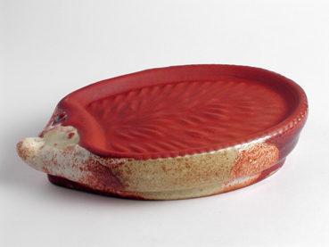
76.Igel BIO (zur Zuechtung fuer Kressen)
Sortiment
Feinere Formen, Aromakeramik und dekorative Stücke zum Verschenken.

76.Igel BIO (zur Zuechtung fuer Kressen)
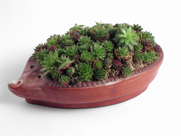
76.Igel BIO
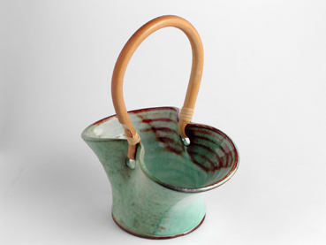
108.Korb fuer getrocknete Blumen - gross
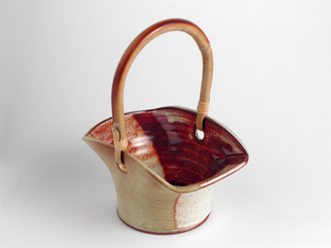
108.Korb fuer getrocknete Blumen - gross
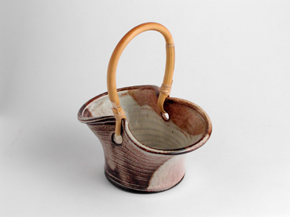
109.Korb fuer getrocknete Blumen - mittel
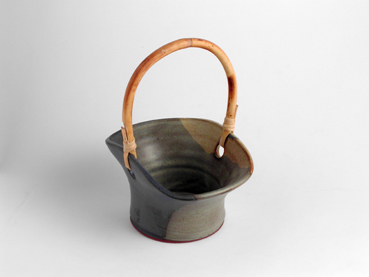
109.Korb fuer getrocknete Blumen - mittel
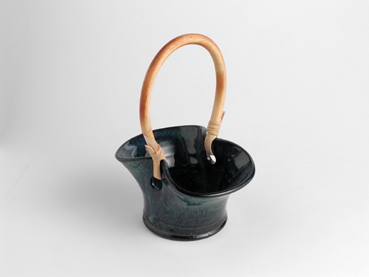
110.Korb fuer getrocknete Blumen - klein
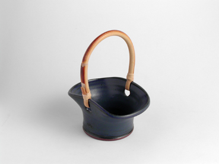
110.Korb fuer getrocknete Blumen - klein
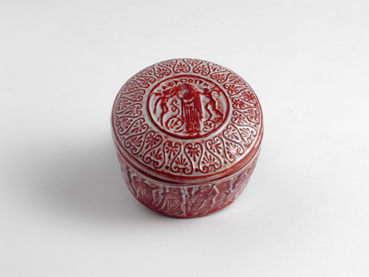
188.Schmuckkaestchen (griechisches Motiv)
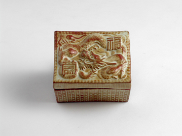
187.Schmuckkaestchen (chinesisches Motiv)
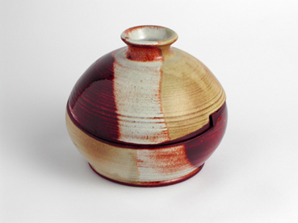
35.Schmuckdose - gedreht
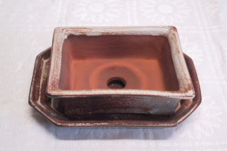
12.Bonsajschale - rektagonal ,20.Bonsajuntersetzter - achteckig
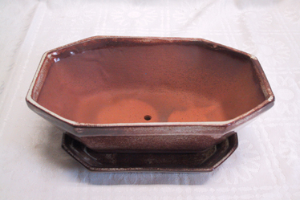
13.Bonsajschale - achteckig ,20.Bonsajuntersetzter - achteckig
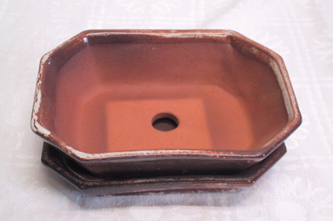
14.Bonsajschale - achteckig - klein ,20.Bonsajuntersetzter - achteckig
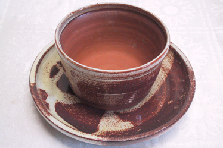
16.Bonsajschale Durchmesser bis zu 12 cm
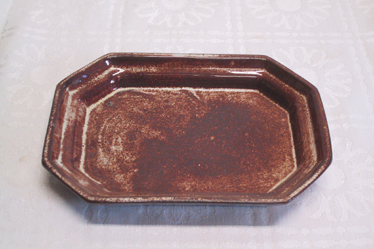
20.Bonsajuntersetzter - achteckig
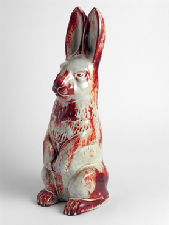
232.Gartenhase

240.Regenwurm (Lockerer fuer Blumentoepfe)
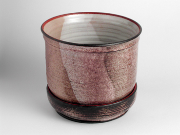
252.Blumentopf mit Untersetzer - gross und bauchfoermig
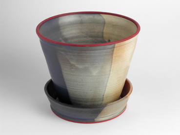
252.Blumentopf mit Untersetzer - gross und konisch
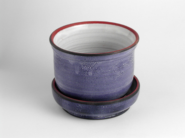
251.Blumentopf mit Untersetzer - klein und bauchfoermig
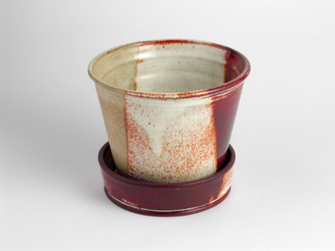
251.Blumentopf mit Untersetzer - klein und konisch
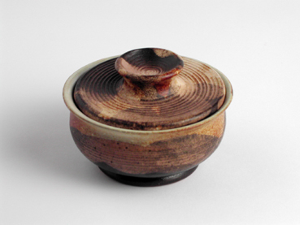
35.Schmuckdose - gedreht - klein
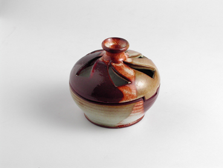
34.Dose fuer getrocknete Duftblumen